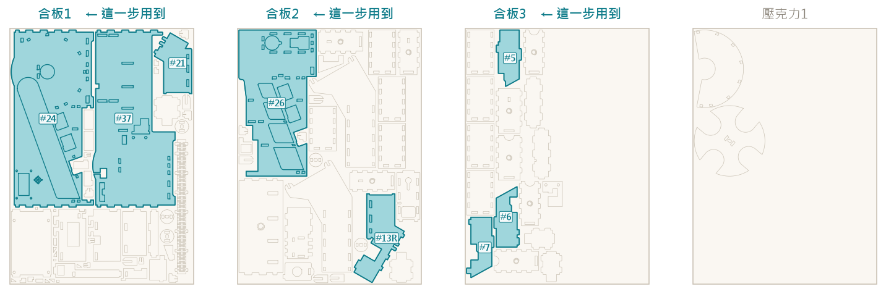

S1
雷切檔與設定
- 上機用的檔案在
03_v2_光耦版/laser_v2/out/：sheet_合板_1.svg、sheet_合板_2.svg、sheet_合板_3.svg、sheet_壓克力_1.svg。 分幣機雷切_光耦版_v2_草稿.svg有隱藏的註記層，是給人看的，不要直接上機。- 黑色 0.2 mm 線＝切割；紅色 0.2 mm 線＝雕刻。紅色圖層設「線／向量雕刻」，不要用填色或掃描。
- 圖層清單把紅色排在黑色前面，黑色圖層開「先切內部（inner first）」。不然整張先切穿，小零件來不及雕刻就掉了或移位。雕刻的小字先試切，再調功率。
- 第一次切之前，先切試切小樣
laser_v2/out/trial_合板_1.svg，確認光耦模組、TM1637 裝得進去。 - #24、#26 開了感測窗，比原機脆。每 10 套多切 2 片 #24、#26 當備片；切好平放，拿的時候不要扳。
- 切割檔裡已經多排的備品：EB-K ×2、S1-P ×1、S1-H ×3、PIN-S50 ×2。原機本來就多給的小零件：U 形卡扣 6 片（用 4）、L 形卡扣 6 片（用 4）、小鍵 4 支（用 2）、圓片 5 片（用 2）★。
